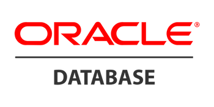
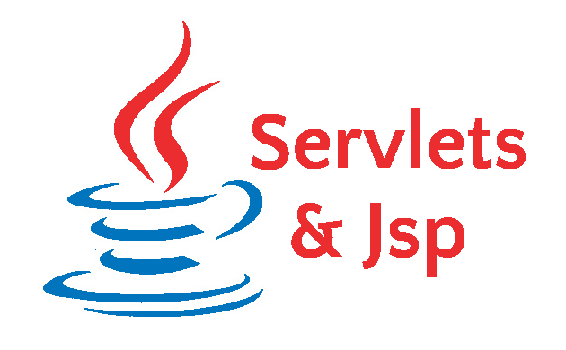

박 진우
JinwooBak
저는
AboutMe
"안녕하세요, 저는 신입 백엔드 개발자 박진우입니다!"
처음 컴퓨터에 대한 흥미를 가지게 된 계기는, 네트워크 관련 장비를 다루는 회사에서 인프라 구축과 장비설정을 하는 일을 하면서
네트워크 장비들이 하나의 시스템으로 연결되어 실시간으로 화면에 연동되는 모습을 보며, 기술이 어떻게 실질적인 솔루션을 제공하는지 직접 경험하게 되었습니다.
이때부터 컴퓨터와 프로그래밍에 대한 관심이 생겼고, 그 후로 백엔드 개발자의 꿈을 품게 되었습니다.
이 목표를 이루기 위해 지금까지 꾸준히 공부하며 개발 역량을 키워가고 있습니다.
기본사항
- 이름 :박 진우
- 생년월일 :1991년 5월 20일
- Email :jw7469@naver.com
- Github :https://github.com/lionbak
- Notion :Jinwoo's Notion Link
학력사항
- 대학교 :한국방송통신대 컴퓨터과학과 졸업예정
- 대학교2 :서원대학교 외식산업학과/경영학과(복수) 졸업
Skills







JAVA 60%
SPRING FRAMEWORK 65%
SERVLETS/JSP 50%
SPRING BOOT 70%
SQL 60%
NETWORK 65%
이력서
조리사로 이력을 시작했지만, 인원계수기 업체에서 다양한 환경에서 네트워크 연결 작업을 수행하고, 장비에서 전송되는 실시간 데이터를 모니터링 페이지와 연동하는 경험을 쌓았습니다.
또한 컴퓨터과학과에서 CS 지식을 습득하고, 한국소프트웨어진흥협회에서 백엔드 개발 교육을 수료하여 이러한 경험을 바탕으로 네트워크와 백엔드 기술을 융합한 개발 역량을 갖추게 되었습니다.
학력사항
평택청담고등학교
정보처리학과
2007 - 2010
서원대학교
외식산업학과 / 경영학과
2010 - 2016
한국방송통신대학교
컴퓨터과학과
2022 - 2024
경력사항
Grand Hyatt Inchon
2014.12 - 2015.02
직급 : 인턴
- 인천 영종도의 Grand Hyatt에서 인턴으로 근무하였습니다.
- 호텔 레스토랑, 대한항공 라운지, 연회 파트에서 음식 제조 업무를 수행했습니다.
The Fourth Restaurant Newyork
2016.03 - 2016.10
직급 : 인턴
- 미국 Hyatt Union Square Newyork 레스토랑에서 인턴으로 근무하였습니다.
- 조식, 중식, 석식 요리 제조 업무를 수행했습니다.
단추로 끓인 수프
2017.12 - 2018.09
직급 : 사원
- 공유 주방 스타트업 Ghost Kitchen에서 사원으로 근무하였습니다.
- 일식, 한식 파트에서 조리,포장,메뉴개발 업무를 수행했습니다.
센서텍코리아
2018.09 - 2023.04
직급 : 대리
- 도난방지기 및 피플카운터 장비를 설치, 유지보수하는 센서텍코리아에서 대리로 근무하였습니다.
- 기술지원 부서에서 네트워크 인프라와 피플카운터 설치 및 유지보수하는 업무를 수행했습니다.
Portfolio
저의 포트폴리오 입니다. 클릭시 해당 프로젝트의 PPT로 넘어갑니다.
DoggiVerse Project
애견인들을 위한 커뮤니티 사이트 제작 프로젝트
StudyClub Project
스터디 모임을 원활하게 할 수 있게 도와주는 웹사이트 제작 프로젝트
Tetrapod Project
마이크로 서비스 환경을 고려한 모듈 및 분산처리 어플리케이션 개발 프로젝트